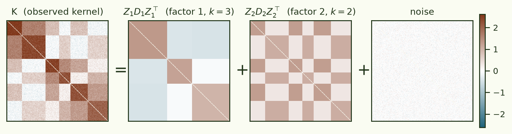
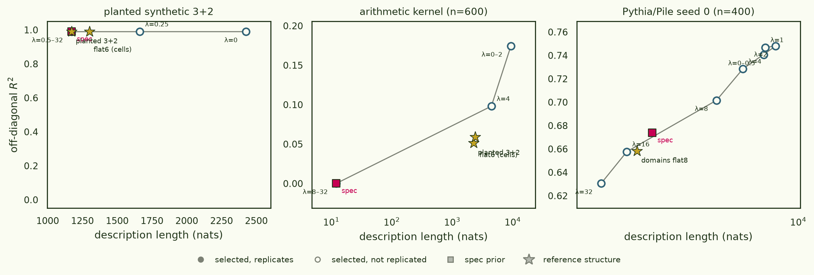
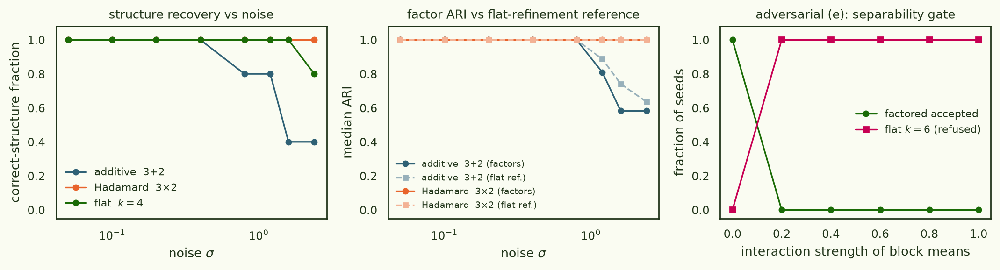
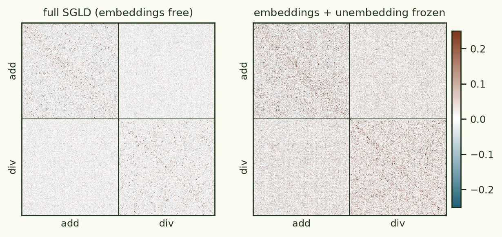
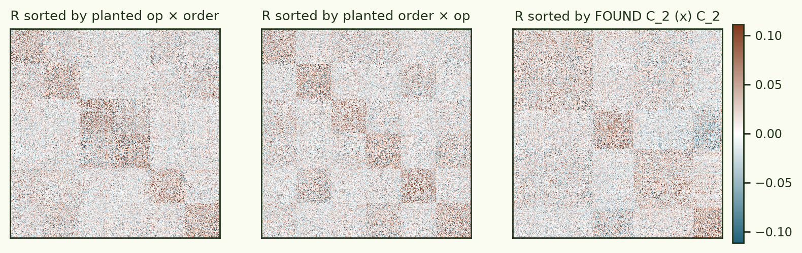
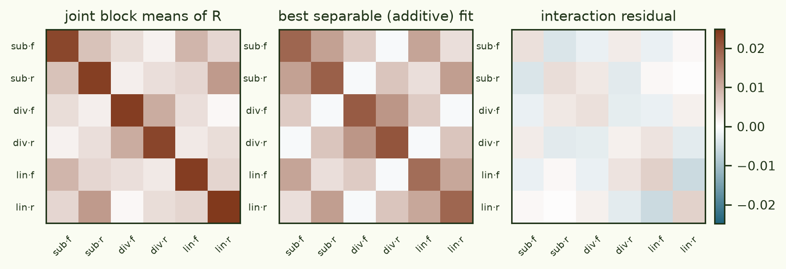
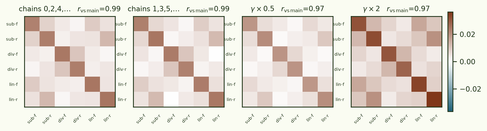
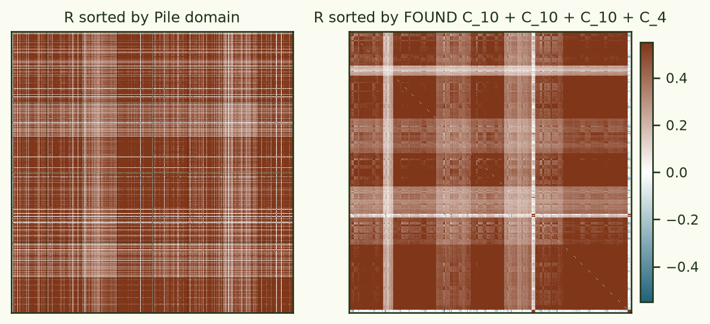
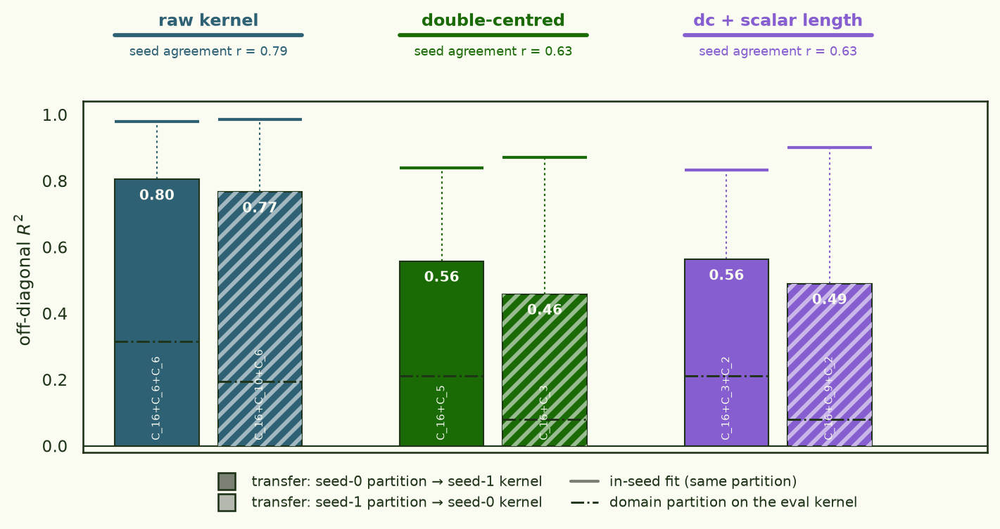

Factoring the loss kernel: the network decomposes the task — just not along your axes
Timaeus' (our ) gets clustered and UMAPed in the original paper — flat structure. But the motivating picture of the kernel is additive: if a network implements non-interacting mechanisms in (approximately) disjoint parameter modules, the probe posterior factorises across modules and the kernel literally decomposes as a sum of per-mechanism kernels (their Appendix A.4). When each datum engages several mechanisms at once — every image has an object and a lighting mode; every equation has an operation and an argument convention — the kernel should be a sum of block-constant kernels over crossed factors, not one flat partition. This piece builds the machinery to find that structure from K alone: a compositional search over sums and of block kernels, scored by , and — the part that makes "factored" mean something — hard independence gates that a relabeled flat clustering cannot pass.
On planted kernels the search recovers sums, products, and flat structure and refuses a non-separable fake product. On a grokked multitask-arithmetic transformer it refuses the factorization I planted — (operation) × (argument order) — and the refusal is correct: the kernel's own block structure says the two linear operations share circuitry within an argument order while division spans both, replicated at r ≈ 0.97 across chains and a 4× γ range. And on a real Pythia/Pile kernel, rich per-seed structure passes every within-seed gate — then dies on seed-to-seed replication.
§1Why "factored", and why gates
A flat clustering of K with k = 6 blocks and a two-factor structure 3 × 2 induce exactly the same partition of the data — fit alone cannot tell them apart. The claim "these are two independent factors" is extra structure, and it needs its own tests. Following the project spec, every accepted factorization must pass:
- Assignment independence — normalized MI between factor labelings ≈ 0, plus a G-test on the contingency table (the factors must be crossed in the data, not a partition split in half).
- Separability () — the joint block-mean tensor over the factor refinement must be additively (or, on the ⊙ branch, multiplicatively) separable: M(a,b),(a′,b′) ≈ D1[a,a′] + D2[b,b′]. Without this, "factored" is a relabeling exercise.
- Per-factor informativeness — each factor alone must explain a nontrivial share of the kernel's off-diagonal variance (guards the MI-degeneracy where a random split of one true clustering looks "independent").
- Trace-level additivity — when the SGMCMC draws are retained, the per-sample loss traces themselves should decompose as μ(z) + Σf ff(a_f(z), t) with mutually uncorrelated factor time-courses. A much sharper test than anything available from K alone; keep your draws.
The model class is a two-operator grammar over block-constant kernels C_k = Z D Z⊤ (hard assignments Z, free symmetric block-value matrix D): sums C+C+… for additively-composed mechanisms, Hadamard products C⊙C for multiplicatively-composed similarities. Everything is fitted on off-diagonal entries only (the diagonal of a loss kernel is variance-inflated), negative entries are kept — they are signal under the additive model, and the reason the ⊙ branch is secondary: log K is undefined entrywise for the covariances competing mechanisms produce. Search is greedy-stagewise (fit a flat block kernel, subtract, recurse until a within-block permutation null says the residual is unstructured) followed by beam-4 refinement over moves INC/DEC/FACTOR/MERGE/ADD/DROP/SWAP-OP, scored by BIC = npairs·log(RSS/npairs) + p·log(npairs) with p = Σf [n·(kf−1) + kf(kf+1)/2]. The FACTOR move is where factoring actually happens: split a flat C6 into 3 × 2 by biclustering its 6 × 6 block-value matrix into the best separable grid — and it is hard-gated on the tests above.

§2Stage A — planted truth
Six synthetic generators with exact planted structure: (a) flat k-block; (b) additive 3+2; (c) additive 3+2+2; (d) Hadamard 3×2 on a positive kernel; (e) an adversarial flat k = 6 whose label marginals mimic a crossed product (MI ≈ 0) but whose block means are non-separable — the case every fit-based method calls "factored" and the separability gate must refuse; (f) pure noise. Acceptance battery at reference noise (n = 300, five seeds each): (a), (b), (d) recovered exactly (every factor ARI = 1.0), (e) refused — the search keeps flat C6 and every attempted FACTOR move is logged gate-rejected — and (f) returns null; the 3-factor (c) recovers 4/5 (one seed over-splits a weak factor). Deterministic given seed; 28 unit tests gate the build.
One design decision turned out to matter more than any other: how much a cluster assignment costs. The spec's BIC counts every datum's label as a free parameter — n·(k−1) parameters charged log(npairs) each — which at n = 1,800 makes one extra cluster cost ≈ 25,700 BIC, i.e. it must explain ~1.6% of entry-level residual variance. But block means are estimated ~n/k times more precisely than entries; the first version of this pipeline kept selecting structures that tracked kernel signal-to-noise rather than network structure (the same kernel gave null at n = 900 and a 2×2 product at n = 1,800). The fix is the spec's own "equivalent Bayesian reading" taken seriously: charge assignments their code length, 2n·log k nats — an ICL-style prior ~17× lighter — and let the §4 gates plus replication carry the anti-overfitting load. Under the lighter prior the battery holds ((e) still refused at every interaction strength, noise still null) and the noise envelope transforms: Hadamard structure is recovered at every tested σ up to 2.4 (previously dead at 1.2), flat to σ = 1.6, additive to σ = 0.8–1.2 — essentially closing the gap to the flat spectral-clustering reference in fig 2.
Since the prior strength is a choice, it deserves a picture rather than a default: sweep a multiplier λ on the label-coding cost and plot each selected structure's fit against its description length — a fit–complexity Pareto frontier, with the spec prior and the natural reference structures overlaid, and each selected point marked by whether it replicates on an independent kernel estimate. On the planted synthetic (fig 7, left) the choice barely matters: every λ from 0.5 to 32 — and the spec prior — selects the planted C₂ + C₃ and replicates at ARI 1.0; only λ ≤ 0.25 over-splits, and replication flags it (ARI 0.44 and below). On the Pythia/Pile kernel (right) the frontier is a smooth ladder — flat C₅ at λ = 32 (R² = 0.63), flat C₇–C₁₉ through λ = 8–16, two-factor sums like C₈ + C₁₆ at λ = 4, four- and five-factor sums at λ ≤ 2 (R² ≈ 0.75) — every relaxation buys real fit, and no point on the ladder replicates across SGLD seeds (best cross-seed ARI 0.17, at the simplest end). The prior picks a point on the frontier; replication tells you where the frontier stops being real.


§3Stage B — a transformer that grokked two tasks
The paper's validation experiment (their Appendix C), reproduced: a 2-layer Power-et-al-style transformer trained to 100% on modular addition and modular division mod 97 with disjoint vocabularies, then probed with at their exact hyperparameters (C = 30 chains × 800 draws, ε = 2·10⁻⁷, nβ = 500, γ = 30,000, batch 512, full probe forward pass at every retained draw). Two estimator lessons, both already familiar from this thread. First, — the paper's own Appendix-B artifact (noise in embedding rows makes shared-token inputs co-fluctuate) matters doubly here and completely dominates the factored variant below if left in. Second, the pooled global-mean estimator inherits each chain's slow drift as common-mode covariance; the thread's estimator high-passes it, and everything downstream uses it.
The model groks (train and validation both 100% by step 3,750), and the paper's own validation statistic reproduces: the principal component of per-sample expected loss shift separates the two tasks at ROC-AUC 0.89 (they report 0.931), and their a = 0 satellite is here too — the ten division probes with a trivial answer (0/b ≡ 0) couple to each other at mean R = 0.46 against 0.02 for other within-division pairs, the single strongest block in the kernel. But the honest headline for what follows: at these settings task structure in the kernel is tail-heavy and mean-weak. Same-task correlations exceed cross-task ones mostly in the extreme tail (99.9th percentile 0.36 vs 0.15, block-centred), the top eigenvector tracks task at r = 0.58, and yet the task partition explains only ~1.5% of the kernel's off-diagonal variance. UMAP's neighbour graph — what the paper visualises — runs on exactly those tails; a block-mean model has to work with the 1.5%. Freezing the embeddings quadruples that share (0.0034 → 0.015): the embedding-noise channel wasn't creating task structure here, it was burying it under idiosyncratic per-probe variance.

Then the factored variant — the experiment the spec calls the headline. Shared operand
vocabulary, explicit operation and order tokens, sequences
[op, ord, a, b] → c: three operations {sub: x−y, div: x·y⁻¹, lin: x+2y}
crossed with two argument orders {fwd: (x,y) = (a,b), rev: (x,y) = (b,a)}, mod 97. The
design intent: op circuits shared across orders, order-routing shared across ops — a
planted 3 × 2. The model groks all six cells (train 100%, val 99.7%). 1,800 probes,
300 per cell.
The pipeline refuses the planted 3 × 2 — separability F ≈ 10³, interaction share 18% — and the refusal is the result: the kernel's 6 × 6 cell-mean matrix shows sub and lin (the two linear maps αa+βb) coupling strongly within the same argument order, while div couples mostly with itself across orders. The network built a linear-combination module keyed by argument role, and a separate division module — not (operation) ⊕ (order).
Concretely, in the 6 × 6 matrix of cell-pair mean correlations (fig 5): div·fwd ↔ div·rev couple at 10.3×10⁻³ — division shares one circuit across argument orders — while sub·fwd ↔ lin·fwd couple at 9.1 and sub·rev ↔ lin·rev at 12.4, the two strongest cross-op bonds in the kernel, both order-diagonal; sub↔div and lin↔div bonds are 2–5. A (op) + (order) model must write every cross-op bond as the same order term; these bonds are op-pair-specific, so the additive fit leaves 18% of the cell-mean variance as interaction and the F-test rejects at F ≈ 10³. The same verdict arrives independently from the retained SGMCMC draws (§4.4): joint-cell time courses explain 2.4% of the block-centred trace variance, and the best additive (op, order) decomposition captures only ~80% of that — the missing fifth is the interaction, seen by a completely different test. And none of it is fragile: the full 6 × 6 bond pattern replicates at r = 0.99 across disjoint chain halves and r = 0.97 under halving or doubling γ (fig 5b). The search's own verdict then depends on the prior exactly the way §2 predicts. Under the spec prior it returns C2 ⊙ C2, and its strong factor is the division-vs-linear-family split at ARI 0.996 — the network's real module boundary, found blind from K; that factor replicates across disjoint chain halves at ARI 0.95 (pred-corr 0.95). Its second binary axis matches no designed trait, no token statistic, and no loss covariate, and replicates only partially (ARI ≈ 0.47) — a real-but-weak axis this budget cannot pin down. Under the lighter label-coding prior the search instead selects a finer flat C12 (subdividing the six cells, NMI 0.31 against them) whose split-half ARI is 0.24 — fine structure the kernel cannot support, caught by the replication gate; a 5× longer SGLD run returns the same shape. Every verdict, under every prior, refuses (op × order).



§4Stage C-lite — a real language-model kernel, and the gate that matters most
The spec's Stage C is Inception-v1/ImageNet, but Timaeus released neither the 10k × 10k kernel nor the estimation code (re-estimating it is a ~$10, 4–6 GPU-hour job — deferred). Instead, the pipeline ran on a real LM kernel: Pythia-160m over Pile documents with frozen embeddings, twice with independent SGLD seeds — first at the repo's validation-run budget, then re-estimated overnight at 40× the effective sample count (8 chains × 2,550 steps per seed, γ = 1,000, n = 1,200 probes over 8 domains). The budget matters enormously to the kernel: seed-to-seed agreement rises from r = 0.62 to 0.79, and the domain partition's share of off-diagonal variance jumps ten-fold, from 3–4% to 20–31%. And yet the search's behaviour barely changes, which is the instructive part. At the small budget each seed finds structure that passes every within-seed gate (a C3 ⊙ C3, a C4 + C2) and none of it replicates across seeds (ARI ≈ 0.1, component correlation ≈ 0.5). At the big budget each seed finds a four-factor additive structure passing every within-seed gate (C10+C10+C10+C4 on seed 0) — and across seeds, exactly one component kernel replicates (pred-corr 0.79): a coarse axis mixing domain identity (NMI 0.15) with document length (η² = 0.15 — this thread's oldest artifact, making another appearance). Every finer partition stays seed-specific (assignment ARI ≤ 0.1). MI ≈ 0, separable block means, informative factors: all satisfiable by structured estimation noise within one estimate, at both budgets. Only the estimation-noise null — refit on an independent estimate and demand the same answer — separates the one real axis from the rest, which is exactly why the spec makes it a hard gate.

§4bAddendum — prediction transfer: what the seed gate is actually rejecting
The seed-replication verdict above is harsh currency: it demands that the two seeds' searches find the same labels (Hungarian-matched ARI). But two estimates can carve the same predictive structure along non-matching boundaries. The fairer metric is partition transfer: freeze the assignments found on seed A, refit only the block values on seed B (a convex least-squares), and ask how much of seed B's kernel the partition explains — against three references: the domain partition scored the same way, random partitions of identical shape, and the seeds' raw agreement.
Asking this question exposed two confounders that deserve their own paragraph. First, the kernel is ~95% rank-one: a single common mode — how strongly each document co-fluctuates with everything — carries 0.946/0.954 of the off-diagonal variance (per seed), and it is not length (top eigenvector ↔ log-length r = 0.18–0.28). Any coarse partition aligned with this mode "transfers" spectacularly, and the raw-kernel numbers in fig 8 are mostly it. Second, document length — this thread's oldest artifact — wants three parameters, not a clustering: a scalar model β₀ + β₁(sᵢ+sⱼ) + β₂sᵢsⱼ on standardized log-length matches the length-quartile clustering (R² 0.071 vs 0.082 on seed 0, 0.031 vs 0.033 on seed 1) — and either way length is a minor 3–7% player that merely correlates with the big mode (r ≈ 0.2–0.3). The honest playing field is therefore the kernel — per-document additive offsets removed, 87–91% of variance and the additive length channel with them — on which the two seeds still agree at r = 0.63: real transferable signal beyond the common mode.
On the deflated kernel the found partitions transfer at R² 0.46–0.56 — two to seven times the domain partition (0.08–0.21), with random same-shape partitions at 0.000 — while their labels never Hungarian-match. Half of what the search fits in-seed (0.83–0.90) is seed noise; the other half is real structure that the domain labels do not describe.
The λ-frontier of §2 also closes cleanly at this budget: searched natively on the overnight kernels (raw, double-centred, and dc + scalar-length-partialled; k ≤ 16, up to five factors), every prior strength from λ = 0 to 8 selects the identical structure in 34 of 36 cells (dc/seed 1 adds a C₄ at λ ≤ 0.5). Prior sensitivity was a symptom of kernel noise, not a property of the problem — at 40× the effective sample count the likelihood picks the structure by itself, and fig 7's ladder is what estimation noise looks like. The selected structures are also bigger — C₁₆ + C₆ + C₆ scale, first factor pinned at the k = 16 cap, consistent with a 160M-parameter model supporting far more than 2 × 2. (One grammar footnote: §4's C₅₃ factor is a MERGE product — the occupied-cell join of two factors, legal in the move set and uncapped by kmax; the random-shape baseline is what keeps such large factors honest.)

§5What I take from this
The gates are the product. Twice in one afternoon, the machinery's job turned out to be saying no: the separability gate refused a factorization that fit the arithmetic kernel perfectly (and was mechanistically wrong), and the replication gate refused three factors that passed every within-seed test on the Pile kernel. A fit-only factorizer — any of the multiple-clustering methods this borrows from — would have reported both. If you take one implementation detail from the spec, take §4.2 + the split-half null.
The kernel sees the network's decomposition, not the designer's. I planted (operation) × (argument order) expecting op-circuits × order-routing. The network instead built a linear-combination module (sub and lin are both αa+βb) specialised per argument role, and a division module that spans roles. In hindsight this is the more economical circuit — and the kernel's cell-mean matrix says it directly, replicated across chains and a 4× γ range. This is what the loss kernel is for: the traits that factor are the traits the network uses.
Kernel SNR is the binding constraint on structure search. Cell-level block means are precise (split-half r = 0.99 on 6 × 6 means) while entry-level correlations are noisy — so partition structure explains only a few percent of off-diagonal variance, and a BIC that charges n·(k−1) assignment parameters against entry-level RSS sits right at its decision boundary (the same kernel gives null at n = 900 and structure at n = 1,800). More retained draws is the cheap lever; a block-mean-level scoring rule is the methodological one. Freezing embeddings during SGLD is free signal: it quadrupled the task-structure share on the flat kernel. And enough draws dissolves the prior question entirely: on the 40× ESS kernels, every λ from 0 to 8 selects the same structure (§4b) — fig 7's frontier is a property of the noisy kernel, not of the network.
Label-replication is the floor; prediction transfer is the fair test. The seed gate rejects label identity, and on this kernel the rejection stands — but the addendum shows what it leaves alive: partitions that predict R² ≈ 0.5 of an independent estimate's deflated kernel, several times the domain labels, with random shapes at zero. The right reading of "fails replication" is "these labels are not canonical" — not "there is nothing here". A rank-one common mode (95% of variance, not length) and a 3-parameter scalar length term are the deflations that make that statement measurable.
What's next. The spec's Stage C proper — re-estimating the Inception/ImageNet kernel (~$10 of GPU) and asking whether a WordNet-independent photometric factor passes these gates; longer SGLD runs to move the search off the BIC boundary; and the RJ-MCMC version of the search, whose jump moves are exactly the FACTOR/MERGE/ADD/DROP set built here.
- models
- 2-layer transformer (d=128, 4 heads, ReLU, ~571k params), Power-et-al grokking recipe: AdamW lr 1e-3, wd 1.0, 50% train fraction; flat: add+div mod 97 disjoint vocabs; factored: {sub, div, lin} × {fwd, rev} shared vocab
- kernel
- localised SGLD at the paper's App-C settings: 30 chains × 800 draws (burn-in 200), ε 2e-7, nβ 500, γ 30k (arms at 15k / 60k, 8 chains); embeddings+positional+unembedding frozen; full probe forward each draw; block-centred covariance (window 50) → correlation
- search
- stagewise + beam-4 refinement; k ≤ 8; gates: NMI ≤ 0.15, separability F ≤ 3 or rel ≤ 0.05, informativeness ≥ 0.01; permutation null n=30, α=0.05
- probes
- flat: 2,000 (1,000/task); factored: 1,800 (300/cell); Pile: 400 (50/domain) small-budget, 1,200 (150/domain) overnight
- pile overnight
- pythia-160m, frozen embeddings, γ 1000, 8 chains × (150 burn + 600 draws @ thin 4) per seed, 2 independent seeds, bf16 probe evals; seed gate 0.79
- priors
- "spec": n·(k−1) assignment params × log npairs; "entropy": ICL label-coding 2n·log k (default); λ-scaled sweep for the frontier
- addendum
- double-centring: LS c + ai + aj on off-diagonals; length: 3-param scalar on standardized log-length; prediction sweep: k ≤ 16, ≤ 5 factors, λ ∈ {0…8}, transfer = frozen-z D-refit (convex) on the other seed, random-shape control
- repro
- everything deterministic given seed; commit d33d686 (branch hadamard-public, ArcadiaImpact/latent-learning); pods eonrmn4psbxdwh (4090), 0zxlboo24nbe9s (H100)
latent-learning branch hadamard —
utils/factored_kernel/ (generators, fitting, gates, search; 28 tests) +
experiments/factored_kernel/ (Stage A/B/C runners, analyses, this page's
figures). Spec: HADAMARD_SPEC.md. Loss kernel = our BIF = Timaeus' Loss
Kernel (arXiv:2509.26537); SGLD settings
from their Appendix B/C; grammar-search pattern after Duvenaud et al.'s compositional
kernel search and Grosse et al.'s matrix-decomposition grammar; independence gates are
kernel-level natural-latent conditions.
Artefacts · HF arcadia-impact/factored-loss-kernel-20260707 — SGLD traces (all arms, both experiments), kernels, w*, probe metadata, Stage A/B/C reports, git SHA.
Compute · 1× RTX 4090 ≈ 4 h ≈ $3 (arithmetic experiments incl. γ arms, 5× rerun, first Pythia re-estimate) + 1× H100 ≈ 18 h ≈ $55 (overnight Pythia kernel at 40× ESS; all searches, analyses and the prior sweep on its idle CPUs) + 1× H100 ≈ 2 h ≈ $6 (§4b addendum: common-mode deflations + prediction-transfer sweep, CPU-only). Total ≈ $65.